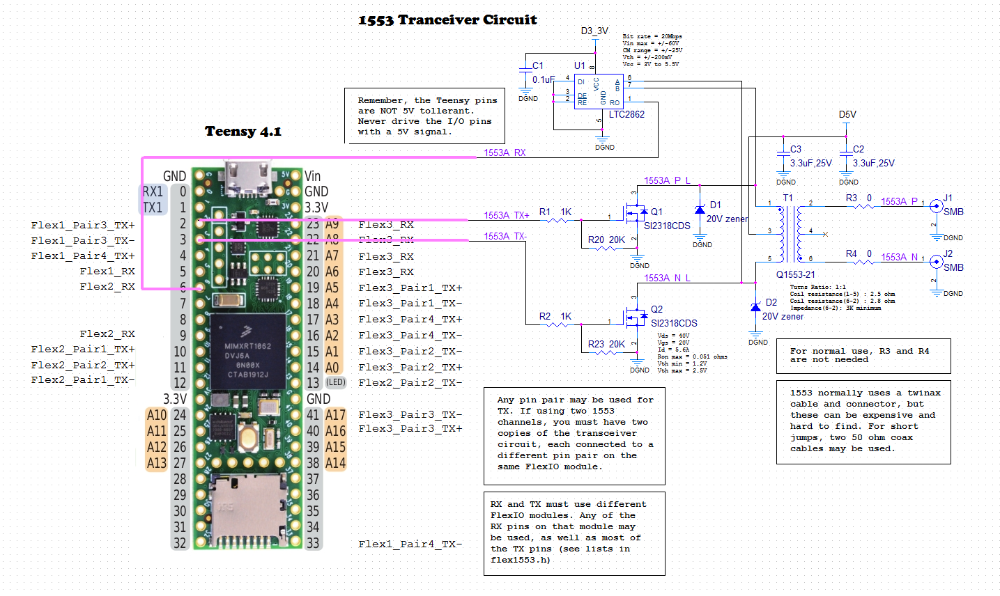

Flex1553 - MIL-STD-1553 for Teensy 4
This is a first-cut at a MIL-STD-1553 interface using the Teensy 4 FlexIO as part of the hardware interface. My need was for a Remote Terminal (slave) interface, so that module is better thought out and more complete, though could still use more work on the API. The Bus Controller (master) interface is more rudimentary, but functional.
Background
MIL-STD-1553 is a serial communication protocol developed for the military in the late 1970's, and is still used today in many military vehicles and aircraft. It has also found its way into some industrial applications. It is very reliable and fairly fast with a 1Mb/s bit rate. You could consider it a predecessor to CAN bus.
On the down side, it is a fairly difficult standard to implement at the physical layer and is generally must be done with custom peripheral IC's, or in recent years, with an FPGA. FlexIO gives us a new tool to use for custom or uncommon protocols. This might not be a military grade solution, but it is good enough to communicate with 1553 devices, at least for test purposes.
Example code
This example (BC_get_packet.cpp) configures the Teensy as a MIL-1553 Bus Controller. Every time the ENTER key is pressed it will request data from an RT. If a properly configured RT is on the 1553 bus, it should respond with a status word and data, and the returned data will be sent to the serial port.
// Instantiate 1553 classes
// This configures FlexIO1 as a 1553 transmitter
// and FlexIO2 as a 1553 receiver
FlexIO_1553TX flex1553TX(FLEXIO1, FLEX1553_PINPAIR_3);
FlexIO_1553RX flex1553RX(FLEXIO2, rx1553Pin);
// This class supports the basic packet operations of a 1553 bus controller.
MIL_1553_BC myBusController(&flex1553TX, &flex1553RX);
// This is just a contaier for the packet data
MIL_1553_packet myPacket;
int rxCount = 0;
void setup() {
// initialize serial port
Serial.begin(115200);
// configure FlexIO for 1553
if( !myBusController.begin() )
Serial.println( "myBusController.begin() failed" );
}
// Request data from RT
void SendRequest()
{
int wc = 4; // requested word count
myPacket.setWordCount(wc);
myPacket.setRta(RTA);
myPacket.setSubAddress(SA);
rxCount = 0; // keep track of how much data we get back
// this will send the request packet and capture a return data words.
// the returned data will be loaded into the packet.
// it does not wait for the hardware to finish, it just gets
// it started and it runs on FlexIO and interrupts from there.
myBusController.request(&myPacket, FLEX1553_CH_A);
// the main loop() polls getRxCount() and displays the returned data
}
void loop() {
// check serial port
if (Serial.available() > 0)
{
// Pressing any key will request a packet
char c = Serial.read();
SendRequest();
}
// check for 1553 response
if(rxCount != myPacket.getRxCount()) {
rxCount = myPacket.getRxCount();
wc = myPacket.getWordCount();
// Words received.
Serial.print(", Received:");
Serial.println(rxCount);
// check for errors
if(myPacket.getParityErr() == true)
Serial.println("Parity error detected");
if(myPacket.getBitFault() == true)
Serial.println("Transition fault detected");
// if we got the whole packet, dump the data
if(rxCount == wc + 1) { // packet data words + STATUS
printPacket(&myPacket);
if(myPacket.validatePacket())
Serial.println(" packet Ok");
else
Serial.println(" packet failed validation");
}
}
}
Hardware
Due to the transformer coupled bus, some external hardware will always be needed for 1553. The required circuitry is shown here (for a single channel).

Only three pins are needed per channel, two for transmit and one for receive. The lists of valid pins are shown below.
T1 is the key component here. This transformer couples our signals to the bus and increases the voltage from our local 3.3V levels to about 20Vpp levels on the bus. The bus itself is bidirectional, meaning that signals travel in both directions (transmit and receive). The transformer used here is designed specifically for 1553 use, substitutions are not advised.
Q1 and Q2 are driver transistors for the transformer. 5V power is sourced to the center tap of the transformer, and with both transistors off, all primary pins of the transformer will be at 5V and no current flows. If one of the transistors turns on, it will pull that end of the transformer to ground and cause a current flow, which will induce a output into the secondary.
When transmitting, Q1 will come on to drive the bus high, or Q2 will come on to drive it low. They never come on at the same time, nor are they ever both off during a transmit.
The rest of the time (when receiving or idle) both Q1 and Q2 will be off, so the transformer is not producing any output. But signals may still travel in the opposite direction, from the bus, back through the transformer to the output of our transistors. Normally these would be at 5 volt levels, but just to be safe, we have D1 and D2 to shunt off any voltages that might be high enough to damage our circuitry.
U1 is a receiver circuit (intended for RS-485 designs) which is being used to capture the incoming signals and translate the 5V differential input to the 3.3V level that our Teensy receiver will need.
J1 and J2 are standard 50 ohm connectors. 1553 normally makes use of "twinax" connectors, which have both positive and negative signals, as well as ground, in the same connector. These connectors, and the related cable, is hard to get, and quite expensive. I have seen that using two standard 50 ohm cables (in reasonably short, matched lengths), will work just fine.
R3 and R4 are sometimes needed, depending upon your bus connection.
TX Pin pairs
This was written so that the transmitter can use two sets of output pins (channel A and channel B). They both use the same transmitter but pretend to be two different channels. The intent here is to provide two transmitters and two receivers in three FlexIO modules. The receivers need to operate simultaneously, but the transmitters do not. If this feature is not needed, pass a -1 for the pinPairB parameter in the TX constructor.
A 1553 transmitter needs a differential output (two pins) to control the required isolation transformer. Due to the way that FlexIO uses pins in State Machine mode, these are the only combinations of pins available for TX:
Teensy 4.1
FlexIO_1: FlexIO_2: FlexIO_3: Define:
pair1: n/a pair1: 10,12 pair1: 19,18 FLEX1553_PINPAIR_1
pair2: n/a pair2: 11,13 pair2: 14,15 FLEX1553_PINPAIR_2
pair3: 2,3 pair3: n/a pair3: 40,41 FLEX1553_PINPAIR_3
pair4: 4,33 pair4: n/a pair4: 17,16 FLEX1553_PINPAIR_4
Each pin pair is listed in the order of pos, neg pins. These will control the FET drivers and isolation transformer needed for standard 1553. Pay attention to the order. If you get them backwards, it wont work.
Configure FlexIO module and the pins pair(s) that you would like to use when instantiating FlexIO_1553TX().
RX Pins
Each receive channel requires one FlexIO module. These are the pins which may be used for the data receive line:
Teensy 4.1
FlexIO_1 FlexIO_2 FlexIO_3
2,3,4,5,33 6,9,11,13 14,15,16,17,20,21,22,23,40,41
This is configured by the receiver class constructor, FlexIO_1553RX().
Bill Of Materials
Qnt Ref Part Supplier Part Num Footprint
____________________________________
1 C1 0.1uF Digi-Key 311-1142-1-ND 0805-2012
2 C2,C3 3.3uF,25V Digi-Key 445-6966-1-ND 0805-2012
2 D1,D2 20V zener Digi-Key SMAJ5932BTPMSCT-ND DO-214AC
2 J1,J2 SMB Digi-Key J613-ND
2 Q1,Q2 SI2318CDS Digi-Key SI2318DS-T1-E3CT-ND SOT23-3
Substitute SI2304DDS Digi-Key 742-SI2304DDS-T1-BE3CT-ND
2 R1,R2 1K Digi-Key P1.00KCCT-ND 0805-2012
2 R20,R23 20K Digi-Key P20.0KCCT-ND 0805-2012
2 R3,R4 0 Digi-Key 311-0.0ARCT-ND 0805-2012
1 T1 Q1553-21 Mouser 673-Q1553-21
1 U1 LTC2862 Digi-Key LTC2862CS8-2#TRPBFCT-ND SOP8
1 Teensy4.1 PJRC TEENSY41 48D2430Y600
Software architecture
This is a Packet level interface to MIL-STD-1553 transceiver. Lower level classes (Flex1553RX & Flex1553TX) are directly controlling FlexIO hardware, either a transmitter or receiver, but not both. A full 1553 transaction requires both sending (command or data) and receiving (data or status). The classes which brings it all together are MIL_1553_BC (master) and MIL_1553_RT (slave). Only one of these two classes should be instantiated.
This supports sending/getting only a single 1553 transaction at a time (up to 32 words of data). This class replaces the ISR in Flex1553RX.cpp, with a more sophisticated version that works with a packet class.
MIL_1553_BC
This is the bus controller class. This class supports the basic packet operations of a 1553 bus controller. It sets up the control word and handles the acknowledge. This requires the use of one FlexIO_1553TX and one or two FlexIO_1553RX instances. It could still use some work on the API.
MIL_1553_RT
This is the remote terminal class. This is setup as mailboxes, where each mailbox refers to one subaddress. There may be up to two instances of this class, where each instance is used for one 1553 bus. If using two buses, each will use its own instance of FlexIO_1553RX, and FlexIO_1553TX is shared between the two. If using two buses, the buses operate independently, they do not work as a redundant pair.
There can only be one Flex1553RX or Flex1553TX instantiation for each FlexIO module. In the case of the i.MXRT1062, there are three FlexIO modules, and you would typically implement one TX class and one or two RX classes. You can not have two instances pointing to the same FlexIO module.
MIL_1553_packet
This class is just a container for packet configuration and data. This is where you would set your RTA and data to send to an RT or BC.
In the case of RT mailboxes, each mailbox is a MIL_1553_packet class, which is attached to the MIL_1553_RT class.
References
- MIL-STD-1553.pdf
- REVIEW AND RATIONALE OF MIL-STD-1553 A AND B
- https://www.milstd1553.com/
- DDC Website (requires login)
For detailed information on FlexIO, refer to the NXP reference manual, Chapter 50. (Look for "i.MX RT1060X Processor Reference Manual" on NXP Website).
For a crash course in FlexIO, see miciwan's excellent 'getting started' writeup https://forum.pjrc.com/threads/66201-Teensy-4-1-How-to-start-using-FlexIO